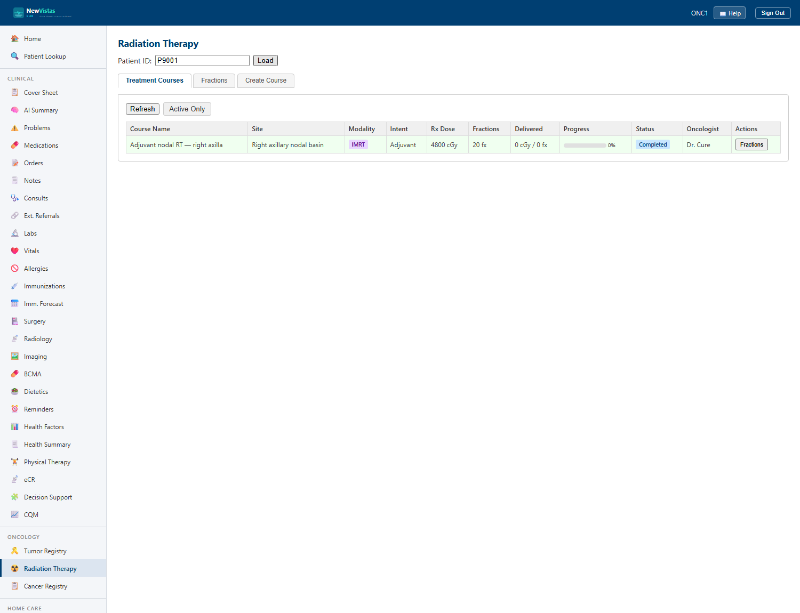

Radiation Therapy
Plan and track a course of external-beam or brachytherapy radiation for a registered tumor — from prescription and CT simulation, through delivered fractions, to completion. Each course captures its modality, intent, dose plan, and care team.

Open Radiation Therapy
- In the sidebar, under Oncology, click Radiation Therapy (or go to
/radiation-therapy). - Confirm the patient in the patient bar; the patient should already have a primary tumor registered in Oncology.
- Existing RT courses are listed with their modality, intent, and status.
Create an RT course
- Click New Course and select the tumor the course treats.
- Choose the modality and intent (see tables below).
- Enter the prescribed dose in
cGy, the number of fractions, and the dose per fraction, plus the beam energy. - Record the care team — radiation oncologist, medical physicist, dosimetrist, and the treatment machine.
- Click Save. The course is created in a planning state.
| Modality | Notes |
|---|---|
| 3D photon | 3D conformal external-beam photon therapy. |
| IMRT | Intensity-modulated radiation therapy. |
| VMAT | Volumetric-modulated arc therapy. |
| SRS | Stereotactic radiosurgery (cranial). |
| SBRT | Stereotactic body radiation therapy. |
| Proton | Proton-beam therapy. |
| Electron | Electron-beam therapy (superficial targets). |
| Brachytherapy | Internal / sealed-source radiation. |
| Intent | Goal |
|---|---|
| Curative | Definitive treatment aimed at cure. |
| Adjuvant | After primary therapy (e.g. surgery) to reduce recurrence. |
| Neoadjuvant | Before primary therapy to shrink the tumor. |
| Palliative | Symptom control rather than cure. |
| Prophylactic | Preventive (e.g. prophylactic cranial irradiation). |
Simulation and starting the course
- Record the CT simulation once the planning scan is done.
- When treatment begins, click Start Course. The course moves to an in-progress state.
Track delivered fractions
- As each fraction is delivered, record it on the course.
- The course shows delivered vs. prescribed fractions and the cumulative dose.
Complete, discontinue, or hold
- Complete when the prescribed fractions are delivered.
- Discontinue to stop the course early (record the reason).
- Hold to pause delivery temporarily (e.g. for toxicity), then resume later.
Who can edit
Creating and updating RT courses requires the
ONCO MANAGER
security key. As with the rest of Oncology, the course is readable
by any clinician for care coordination but editable only by oncology staff.
For the demo, sign in as oncologist ONC1 (password
smythVista1).